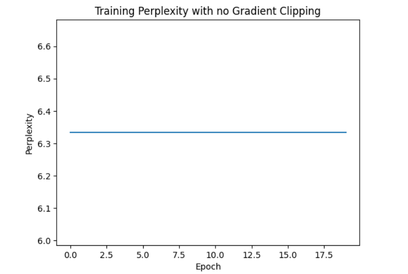
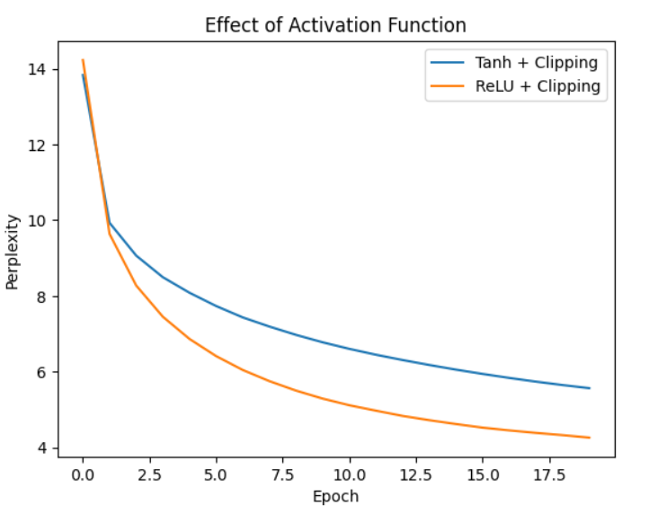
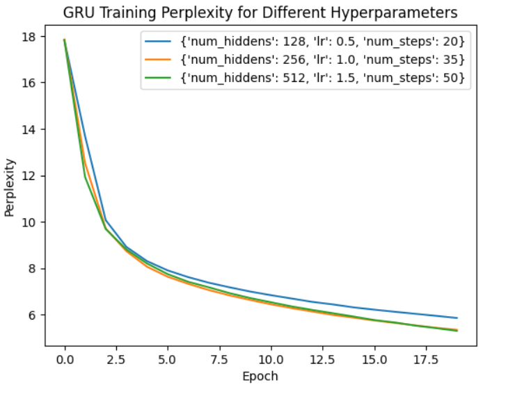
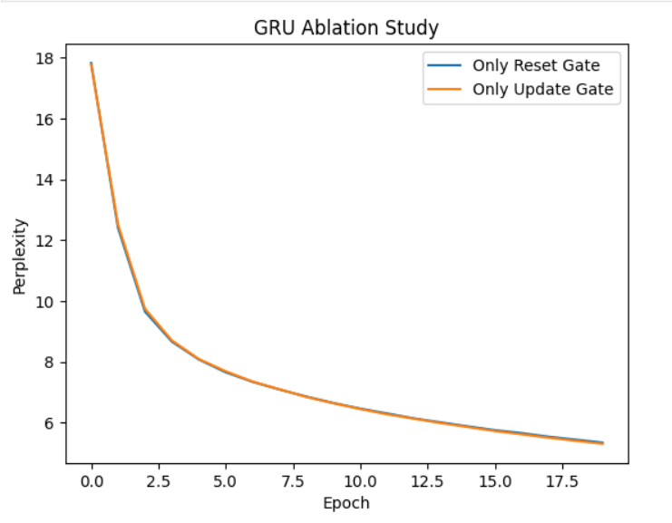

The goal of part 1 was to implement a vanilla recurrent neural network from scratch and train it on the time machine dataset. The purpose was to study the effects of hyperparameter turing, gradient clipping and activation functions on model performance measured by validation perplexity.
Character-level tokenization was used, where each character is treated as an individual token. It ensures consistency with the D2L reference and allows the model to learn fine-grained sequential dependencies. Long sequences were partitioned into fixed length to allow efficient mini-batch maintenance and temporal continuity.
We trained a basic RNN with the following hyperparameters: hidden units = 256, learning rate = 1.0, time steps per minibatch = 35, batch size = 32, epochs = 20, and gradient clipping = 1.0. The training perplexity decreased from 13.83 in Epoch 1 to 5.57 by Epoch 20, showing that the model effectively learned sequential patterns in the text.
Perplexity dropped quickly in the first few epochs, 13.83 to 8.49 by Epoch 4, as the model captured basic text patterns, and then gradually decreased as predictions were refined. These results indicate strong predictive accuracy for a basic RNN. The chosen hyperparameters balance training speed and model performance effectively.
The results : (copied from my results)
Epoch 1, Perplexity 13.83 Epoch 2, Perplexity 9.93 Epoch 3, Perplexity 9.07 Epoch 4, Perplexity 8.49 Epoch 5, Perplexity 8.08 Epoch 6, Perplexity 7.73 Epoch 7, Perplexity 7.43 Epoch 8, Perplexity 7.19 Epoch 9, Perplexity 6.97 Epoch 10, Perplexity 6.78 Epoch 11, Perplexity 6.60 Epoch 12, Perplexity 6.45 Epoch 13, Perplexity 6.31 Epoch 14, Perplexity 6.18 Epoch 15, Perplexity 6.06 Epoch 16, Perplexity 5.94 Epoch 17, Perplexity 5.84 Epoch 18, Perplexity 5.74 Epoch 19, Perplexity 5.65 Epoch 20, Perplexity 5.57

Figure 1: Training perplexity over 20 epochs for Part 1.
Training perplexity remained constant at 6.33 for all 20 epochs. The model failed to learn effectively because exploding gradients destabilized training. With no clipping the RNN could not improve predictions. However, it shows the importance of gradient clipping for stable learning.
Epoch 1, Perplexity 6.33 Epoch 2, Perplexity 6.33 Epoch 3, Perplexity 6.33 Epoch 4, Perplexity 6.33 Epoch 5, Perplexity 6.33 Epoch 6, Perplexity 6.33 Epoch 7, Perplexity 6.33 Epoch 8, Perplexity 6.33 Epoch 9, Perplexity 6.33 Epoch 10, Perplexity 6.33 Epoch 11, Perplexity 6.33 Epoch 12, Perplexity 6.33 Epoch 13, Perplexity 6.33 Epoch 14, Perplexity 6.33 Epoch 15, Perplexity 6.33 Epoch 16, Perplexity 6.33 Epoch 17, Perplexity 6.33 Epoch 18, Perplexity 6.33 Epoch 19, Perplexity 6.33 Epoch 20, Perplexity 6.33

Figure 2: Training perplexity without gradient clipping.
Training perplexity decreased from 14.23 epoch 1 to 4.26 by epoch 20. The model learned properly. Clipping gradients prevented the values from exploding allowing stable updates and effective learning.
Training perplexity also decreased, showing that ReLU can be used but gradient clipping remains essential due to the potential for large gradients with ReLU. The combination of ReLU and clipping gives comparable performance to Tanh with clipping.

Figure 3: Effect of activation functions on training perplexity with gradient clipping.
In part 2 we implemented gated recurrent units to train on the time machine dataset. The goal was to study the effects of hyperparameters and the importance of gating mechanisms on model performance measured by training and validation perplexity.
Perplexity trends : all configurations start with a high perplexity at epoch 1 because of random initialization. Perplexity decreases steadily across epochs as the GRU learns sequential dependencies.
Effect of hidden units and sequence length: increasing hidden units from 128 to 256 to 512 reduces the final perplexity, modern can better capture context with more hidden units. Longer num_steps helps the GRU remember longer contexts, slightly improving final performance.
Learning rate: higher learning rates accelerate convergence but need to be balanced to avoid instability. All configurations were stable in this training.
Hidden units=512, learning rate =1.5, Num steps =50 final perplexity 5.30. Shows strong predictive capability and efficient learning of text sequences.
Training GRU with {'num_hiddens': 128, 'lr': 0.5, 'num_steps': 20}
Epoch 1, Perplexity 17.82 Epoch 2, Perplexity 13.69 Epoch 3, Perplexity 10.07 Epoch 4, Perplexity 8.92 Epoch 5, Perplexity 8.31 Epoch 6, Perplexity 7.91 Epoch 7, Perplexity 7.62 Epoch 8, Perplexity 7.38 Epoch 9, Perplexity 7.18 Epoch 10, Perplexity 7.00 Epoch 11, Perplexity 6.84 Epoch 12, Perplexity 6.70 Epoch 13, Perplexity 6.55 Epoch 14, Perplexity 6.44 Epoch 15, Perplexity 6.32 Epoch 16, Perplexity 6.22 Epoch 17, Perplexity 6.13 Epoch 18, Perplexity 6.04 Epoch 19, Perplexity 5.95 Epoch 20, Perplexity 5.86
Training GRU with {'num_hiddens': 256, 'lr': 1.0, 'num_steps': 35}
Epoch 1, Perplexity 17.85 Epoch 2, Perplexity 12.52 Epoch 3, Perplexity 9.72 Epoch 4, Perplexity 8.74 Epoch 5, Perplexity 8.07 Epoch 6, Perplexity 7.63 Epoch 7, Perplexity 7.33 Epoch 8, Perplexity 7.06 Epoch 9, Perplexity 6.83 Epoch 10, Perplexity 6.63 Epoch 11, Perplexity 6.45 Epoch 12, Perplexity 6.28 Epoch 13, Perplexity 6.14 Epoch 14, Perplexity 5.99 Epoch 15, Perplexity 5.87 Epoch 16, Perplexity 5.75 Epoch 17, Perplexity 5.65 Epoch 18, Perplexity 5.54 Epoch 19, Perplexity 5.44 Epoch 20, Perplexity 5.35
Training GRU with {'num_hiddens': 512, 'lr': 1.5, 'num_steps': 50}
Epoch 1, Perplexity 17.82 Epoch 2, Perplexity 11.93 Epoch 3, Perplexity 9.69 Epoch 4, Perplexity 8.81 Epoch 5, Perplexity 8.20 Epoch 6, Perplexity 7.75 Epoch 7, Perplexity 7.42 Epoch 8, Perplexity 7.18 Epoch 9, Perplexity 6.93 Epoch 10, Perplexity 6.72 Epoch 11, Perplexity 6.54 Epoch 12, Perplexity 6.36 Epoch 13, Perplexity 6.21 Epoch 14, Perplexity 6.06 Epoch 15, Perplexity 5.92 Epoch 16, Perplexity 5.77 Epoch 17, Perplexity 5.67 Epoch 18, Perplexity 5.53 Epoch 19, Perplexity 5.42 Epoch 20, Perplexity 5.30

Figure 4: GRU training perplexity trends for various hyperparameter configurations.
Only reset gate active: Ignore the update gate; Only update gate active: Ignore the reset gate.
The full GRU achieved the lowest training and validation perplexity. The perplexity decreased smoothly over epochs and the generated text was more meaningful and coherent. This shows that using both gates help the model learn sequence patterns effectively. Without the update gate(reset gate only) performance degraded. The training and validation perplexity were noticeably higher than full GRU. The learning curve was less stable and converged to a worse final value. This behavior is because the update gate is responsible for controlling how much of the previous hidden state is preserved. Without it, the model effectively overwrites the hidden state at every time step, preventing it from maintaining long-term dependencies.This shows the update gate plays a role in preserving memory over time. GRU without reset gate, the performance also degraded but generally less severe than when the update gate was removed. However, the model was still able to maintain some long-term structure because of the update gate. The reset gate allows the model to selectively forget irrelevant past information when computing the candidate hidden state. Without it the model always uses the entire previous hidden state. Overall, the results show that the gating mechanisms in GRUs are essential for modeling sequential data effectively.
Reset gate only:
Epoch 1, Perplexity 17.83 Epoch 2, Perplexity 12.40 Epoch 3, Perplexity 9.65 Epoch 4, Perplexity 8.66 Epoch 5, Perplexity 8.08 Epoch 6, Perplexity 7.66 Epoch 7, Perplexity 7.34 Epoch 8, Perplexity 7.09 Epoch 9, Perplexity 6.86 Epoch 10, Perplexity 6.65 Epoch 11, Perplexity 6.46 Epoch 12, Perplexity 6.30 Epoch 13, Perplexity 6.14 Epoch 14, Perplexity 6.01 Epoch 15, Perplexity 5.88 Epoch 16, Perplexity 5.75 Epoch 17, Perplexity 5.66 Epoch 18, Perplexity 5.54 Epoch 19, Perplexity 5.44 Epoch 20, Perplexity 5.35
Update gate only:
Epoch 1, Perplexity 17.78 Epoch 2, Perplexity 12.51 Epoch 3, Perplexity 9.75 Epoch 4, Perplexity 8.71 Epoch 5, Perplexity 8.09 Epoch 6, Perplexity 7.69 Epoch 7, Perplexity 7.35 Epoch 8, Perplexity 7.10 Epoch 9, Perplexity 6.84 Epoch 10, Perplexity 6.64 Epoch 11, Perplexity 6.45 Epoch 12, Perplexity 6.27 Epoch 13, Perplexity 6.13 Epoch 14, Perplexity 5.99 Epoch 15, Perplexity 5.86 Epoch 16, Perplexity 5.73 Epoch 17, Perplexity 5.62 Epoch 18, Perplexity 5.51 Epoch 19, Perplexity 5.40 Epoch 20, Perplexity 5.31

Figure 5: Ablation study showing the impact of reset and update gates on GRU performance.
The Project 2 illustrated key principles in modern recurrent neural networks: the critical role of hyperparameter tuning, the impact of activation functions and gradient control, and the architectural advantages of gated RNNs for handling sequential data. By experimenting with these models on a character-level dataset, we gained practical insights into the challenges and strategies for building effective sequence models.